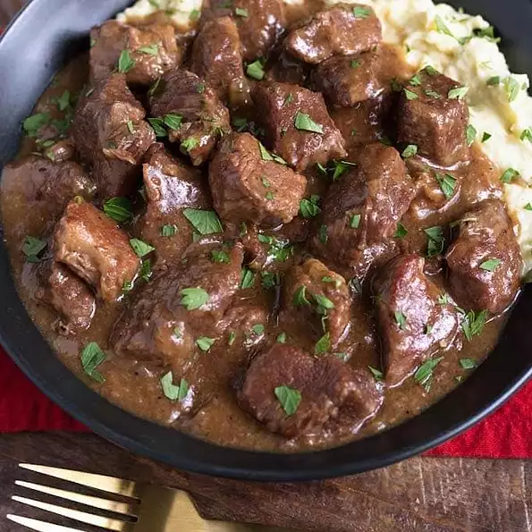

Instant Pot Beef

Description
These super tender and delicious sirloin tips are braised and pressure-cooked in a rich gravy. Serve over mashed potatoes, rice, or cauliflower rice.
Ingredients
- 3 tablespoons all-purpose flour
- 2 teaspoons steak seasoning
- 2 teaspoons garlic powder
- 1 teaspoon onion powder
- 1¼ teaspoons kosher salt
- ½ teaspoon ground black pepper
- 1 (2 pound) beef sirloin, cut into 2-inch strips
- 2 tablespoons olive oil
- 2 tablespoons salted butter
- 1 medium onion, chopped
- 2 large cloves garlic, minced
- ⅓ cup red wine
- 1 (10.5 ounce) can beef consomme
- 1 tablespoon Worcestershire sauce
- 1 teaspoon beef bouillon granules
- 1 teaspoon dried thyme leaves
Steps
- Mix flour, steak seasoning, garlic powder, onion powder, kosher salt, and pepper together in a 1-gallon zip-top bag. Add sirloin strips and shake until evenly coated.
- Turn on a multi-functional pressure cooker (such as Instant Pot®) and select Saute function. When the pot is hot, add the oil. Then add 1/2 of the steak in one layer. Brown both sides, about 5 minutes, but don't cook through, and remove to a plate. Repeat with the remaining meat.
- Add butter, then onion to the pot. Stir and scrape the bottom of the pot, scraping up all of the browned bits. Add the garlic; stir. Cook for about 20 seconds, then add the red wine. Add consomme, Worcestershire sauce, beef bouillon, and thyme leaves. Mix well to dissolve the bouillon. Cancel the Saute setting. Add the beef tips back into the pot. Close and lock the lid.
- Select high pressure according to manufacturer's instructions; set timer for 25 minutes. Allow 10 to 15 minutes for pressure to build.
- Release pressure using the natural-release method according to manufacturer's instructions, for 10 minutes. Release remaining pressure carefully using the quick-release method, about 5 minutes. Unlock and remove the lid. Stir, taste gravy, and adjust salt if necessary.